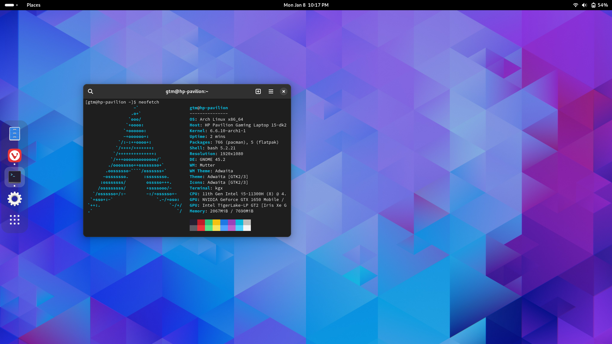

If you ever had tried a Linux distro or you have a friend who is a Linux-fan, there are high chances you'd have heard of Arch Linux. It's a rolling-release distro that keeps your makes you keep your distro on the bleeding edge of the Software Universe. You'd also probably know that installing Arch is not a cakewalk, not the first time at least. All it gives you with it is a terminal and it's upto you to mount your drives, get the kernel, get packages even for connecting to internet via terminal, download a Desktop environment and so on...And if you think you're done, then you are living in a bubble. Arch is a minimal OS and it does not give you anything you did not ask for. Now think about all the things you did not ask for from your OS!
 Ubuntu, Debian and Arch
Ubuntu, Debian and Arch
While this may sound unnecessary pain but believe me, the knowledge gained from successfully installing, using and maintaining Arch Linux is unparalled. I got to know about so many things that work under the hood and make our OS experience seemless. The reason I got to know about them because I had to install and configure them myself. There's a reason a fraction of a percentage of people are using Arch on this planet! There's a reason people boast about it!


But apart from knowledge gain and the inevitable pain, if you manage to get it running, what you get is an exceptional experience. I migrated from Ubuntu 22.04 LTS to Arch Linux and the feeling I got after successfully installing the system is what I still cherish. I chose GNOME as the Desktop environment (as I am not much into customizing the looks, and GNOME looks sleek by default). For reference, I took this snap after the installation:
The boot time, the processing time, and the responsiveness....everything improved! More importantly, the experience improved. But, yeah! That was all. I did not see any other immediate gains. Now, I still had hopes of pleasant surprises coming all the time as people on Reddit used to say, so I kept on using it. I even started to boast about it, like every Linux elitist, and before I realized, I became a Linux Elitist!


As days passed by, the times kept getting tougher. I used to worry about doing a system upgrade every few days so it dosen't break. For basic tasks like adding a startup script, I used to spend dozens of minutes understanding structure and flow, and eventually breaking something out of frustration. After a few weeks, almost everytime I started my laptop, some kernel panic would not let the OS boot, and I'd have to force shutdown and restart multiple times, just hoping to get it started. After a week of this issue and not finding anything latest and straightforward about solving it, I made my mind!
Now before you judge me and mark as a "noob" who can't fix his Arch setup, let me clear this out:
I really don't care enough to fix it! And that's not an excuse. With all due respect, I've got better things to do with my time!
I expect my laptop to start when I want it to!
That seems basic. But it's not the case with Arch! There's no guarantee that it will boot normally and not give you a black screen with a bunch of errors after a pacman -Syu. Ironically, Fast and Releable startup time was one of the reason I switched to Linux from Windows. Arch seems to defeat that purpose.
Bleeding Edge really bleeds!
One of the biggest advantages of Arch is the access to the latest software. You can literally update anything residing on your drive, anytime. That's what a rolling relase distro is, unlike Ubuntu where some major updates are atleast deffered by 6 months. But I now realize that those 6 months are so crucial. Bleeding Edge Software can often break something on your system as it's less tested. You can of course roll back, but then that's another hassle!

I can't possibly learn something at all points of time...
Imagine your mother asked you to get the translation of an English word in your native language. Now she expects it quickly, given that she's in a hurry and you are already on the computer. So, you quickly type it in Google to translate......just to get a bunch of ▯▯▯▯▯▯▯. Now it strikes to you that you didn't install the native fonts on your OS so the output can't be recognized. You ask her to wait and quickly search the web for a fix. People suggest you to read the wiki for "basic stuff", so you go to the Arch Wiki. Now that in itself is a whole new labryinth. While I am truly grateful for the amount and depth of knowledge this wiki contains, it just isn't quick to solve a problem most of the times. You have to learn what fonts are and how are they treated in Linux, what are all the formats, who are the providers, what all packages are available, with so many choices, to eventually find out that Indic fonts are on another page Now you go to that page to see similar options there and after googling which one is best, you download them. Your mother is pissed for you not fulfilling a simple request. That's the case with Arch, my friend! You've to learn before you can do anything. Now that's a good or bad thing, depending on the situation. It's really nice to know these thing but at times, I need my system to just work!
It's not the OS, it's the user!
Now, I am not saying that Arch is bad. It's a great OS and I'd recommend it to anyone who wants to learn about Linux. But it's not for everyone. It's not for me. I am a developer and a student. I need my system to work and not be a constant source of worry. I need to be able to do things quickly and not spend hours learning about the system. I need to be able to use my system and not be used by it. I need to be able to focus on my work and not on my system. I need to be able to use my system and not be used by it. People who use Arch are not better than people who don't. It's just a choice. It's not the OS, it's the user!

So, I switched back to Ubuntu. I am happy with it. It's not the best, but it's the best for me.
That being said, I am still an ardent Linux fan and user. Elitists tend to forget that the whole point of Linux is the freedom to choose. I keep saying this to everyone and staunchly believe that
Linux is probably the best piece of software ever written in history! Prove me wrong.

If you ask me, I'd say that the best distro is the one that works for you. In most cases, any distro is fine as long as it's Linux.


So that's all! This blog was more of a meme collection then a write up. But I think these memes aptly deliver the emotions! And yeah, one more thing...
I don't use Arch, btw!
Logging off...